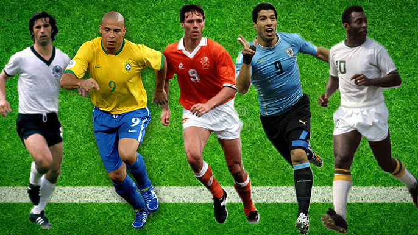
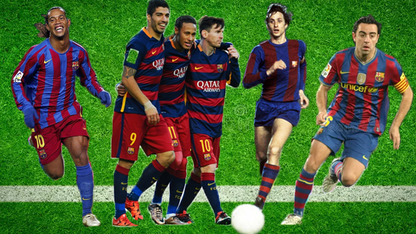
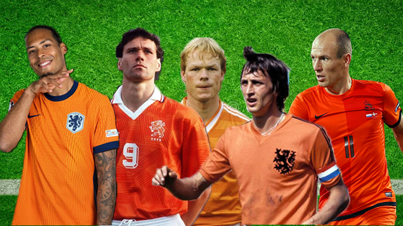
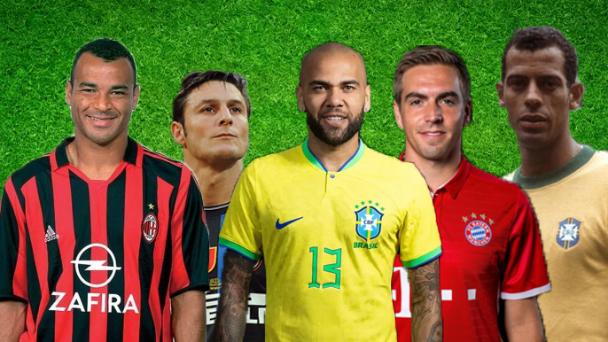

Ídolos de Todos los Tiempos

Los mejores 9 de la historia del fútbol
Los mejores delanteros centro de la historia del fútbol, esos “9” implacables que dejaron su huella a puro gol.

Los 10 mejores jugadores del FC Barcelona
Un top de los 10 futbolistas más grandes que vistieron la camiseta del FC Barcelona, ídolos eternos del club.

Los mejores jugadores holandeses de la historia
Los mejores jugadores holandeses de la historia, genios del fútbol total que revolucionaron el juego con su técnica, visión y legado incomparable en la Naranja Mecánica y el mundo.

Los mejores laterales derechos de la historia
Un homenaje a los mejores laterales derechos de la historia, jugadores que combinaron defensa, velocidad y proyección ofensiva, dejando una huella imborrable en el fútbol mundial.